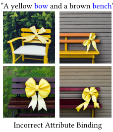

Image generators put a prompt's colors on the wrong objects
On the standard benchmark, Stable Diffusion binds a color to the right object at 0.38 out of 1, because the prompt is encoded with no record of which adjective belongs to which noun.
Why this matters
Text-to-image tools are now on most phones, and the failure you meet on the second serious prompt is almost always this one. The model gets the objects and the mood right, then puts the wrong color, texture, or position on the wrong thing. This lesson works backward from that wrong picture to what causes it, one part of the system at a time, and marks the places where the people who build these systems still disagree. By the end you should be able to say why the color lands on the wrong object, and to hear when someone's explanation skips the step where it actually goes wrong.
- 01
- An attention head is a weighted average that computes its own weights: the operation cross-attention is built from.
- 02
- The diffusion paper behind today's image generators: how a model turns noise into a picture.
- 03
- Six apples come out as some apples: a neighboring failure in the same pipeline.
The bench comes out yellow
A text-to-image model takes a line of text and returns a picture meant to match it. Give it one object with one attribute, a red apple or a wooden chair, and it usually obliges. Give it two objects that each carry their own attributes, and it starts to slip.
When researchers testing Stable Diffusion asked it for a yellow bow and a brown bench, it drew the bow yellow and then painted the bench yellow too, dropping the brown the prompt had assigned to it.1 Both objects arrived. The color meant for one of them landed on both.

One prompt is an anecdote. The same slip shows up wherever binding is measured at scale. On T2I-CompBench, a benchmark of thousands of compositional prompts, Stable Diffusion v1.4 scores 0.38 out of 1 at putting the named color on the named object, and only 0.12 at getting spatial relations like “on top of” right.2 A separate study generated 1,350 DALL-E 2 images from basic relation prompts and asked 169 people to judge them; about 22% matched the relation requested.3
The colors and the objects are all there. Only the pairing between them is wrong. To see why, follow the prompt through the two steps that stand between the words and the picture.
The path from words to image
The picture is not drawn from the prompt directly. First the words are handed to a text encoder, a network that reads the prompt and turns it into a list of vectors, one for each word or word-piece. Most image systems use a CLIP-style encoder, trained by matching whole captions to whole images across 400 million pairs.4 That training is the point to hold on to, and this course covers CLIP itself in its own lesson.
Those vectors are what the image model consults while it works. A generator like Stable Diffusion builds the picture by denoising: it starts from a field of noise and refines it step by step, the subject of an earlier lesson. At each step it reads the text vectors through cross-attention, the operation that lets one set of things attend to another. Here each region of the emerging image attends to the words and pulls in the ones that describe it.5 Attention has its own lesson; what matters for binding is that cross-attention is the only channel through which the prompt reaches the canvas.
Two places, then, can bend the pairing: the encoder that writes the vectors, and the cross-attention that reads them.
Where the binding comes loose
The tidy story blames the encoder. CLIP's text encoder reads left to right behind a causal mask, so each word's vector is blended with the words before it; by the time “bench” is encoded it carries traces of “yellow,” “bow,” and “brown” alike.6 And CLIP was never trained to keep an adjective attached to its noun. Its objective rewards a single pooled sense of the whole caption, matched against the whole image, with no signal that “yellow” modifies “bow” and not “bench.”4 On this account the encoder hands the image model a loose bundle of concepts, and the pairing is already lost in the text, before the image model runs at all.
That story is too tidy. If the encoder held all the blame, repairing the encoding would repair the picture. StructureDiffusion tries exactly that. It parses the prompt and feeds structured noun-phrase encodings into the image model, and the payoff is small, lifting two-object color accuracy from 19.2% to 22.7%.6 Attend-and-Excite leaves the encoder untouched and works only on the cross-attention, pushing each object's word to claim a region of the image, and it recovers far more.1
The gap it closes points at the same place. When Stable Diffusion draws a two-object prompt, the whole prompt matches the image reasonably well, around 0.83 on a CLIP similarity score. The worse-served object matches at only 0.60 to 0.63: one object is rendered while the other is dropped or mis-colored. Steering the cross-attention raises that second object to 0.69 to 0.72.1
| Fix | Intervenes on | Reported result |
|---|---|---|
| StructureDiffusion | the text encoding | two-object color 19.2% → 22.7% |
| Attend-and-Excite | the cross-attention | worse-served object 0.60–0.63 → 0.69–0.72 |
This does not settle where the fault lives. Each method reports gains on its own prompts and metrics, and each favors the part it chose to touch, so the numbers cannot be compared directly.16 What they agree on is narrower and firmer: reach into the text side or the attention side and binding improves, which locates the fault in those two parts and not somewhere else.
The failure is not particular to one encoder either. A separate study of DALL-E 2, which uses a different text encoder, catalogs the same behavior: one attribute word modifying two objects, a single word playing two roles, a property leaking from one object to its neighbor.7
How far the explanation reaches
Two things are settled. The failure is systematic, not occasional: it is measured on Stable Diffusion by T2I-CompBench, on DALL-E 2 by the relation study, and reproduced by every fix paper that first had to document the problem it set out to solve.2316 And the cause lives in the text conditioning and the cross-attention, the two parts that carry the words into the image, because that is where every working fix reaches in.16
Two things are open. The first is how the blame divides. The fixes disagree about how much of the problem sits in the encoding and how much in the attention, and their evidence is competing methods rather than a clean split.16 The second is whether any of this generalizes. The fixes move the numbers, but the ceiling stays low; even after correction, two-object color is right about 22.7% of the time.6 A 2025 review argues the shortfall is architectural, that continuous attention is ill-suited to the discrete job of keeping each attribute on its own object, and that incremental fixes will not close the gap.8
Under all of it sits one plain fact, and it is where the explanation reaches bottom: the model was never handed the sentence's structure. Nothing about which adjective governs which noun survives into the vectors the picture is drawn from, so nothing downstream can reliably put it back. That is the step below which no further part of the system would change the answer.
The takeaway
The wrong-colored object is not a rendering glitch. It is what happens when a sentence is turned into a set of vectors that no longer records which word described which thing. That set is then handed to a model whose only link to the prompt is an attention step, and the step can send a color to the wrong region. The objects survive that trip. The pairing between them does not. What is firm is that the failure is real, measured, and reproduces across different systems, and that its cause sits in those two parts. What is still argued is how the blame divides between them, and whether the fixes will ever hold. So when someone tells you a bigger model will simply learn to follow the prompt, the question to ask is where, in those two steps, the sentence's structure is supposed to come back.
- 01
- T2I-CompBench: the benchmark and its full per-category scores.
- 02
- Attend-and-Excite: the cross-attention fix, with more failure examples.
- 03
- Right Looks, Wrong Reasons: the case that the fix has to be architectural.
Sources
- arXiv · Chefer et al., “Attend-and-Excite: Attention-Based Semantic Guidance for Text-to-Image Diffusion Models” (2023)
- arXiv · Huang et al., “T2I-CompBench: A Comprehensive Benchmark for Open-world Compositional Text-to-image Generation”
- arXiv · Conwell & Ullman, “Testing Relational Understanding in Text-Guided Image Generation” (2022)
- arXiv · Radford et al., “Learning Transferable Visual Models From Natural Language Supervision” (CLIP, 2021)
- arXiv · Rombach et al., “High-Resolution Image Synthesis with Latent Diffusion Models” (2022)
- arXiv · Feng et al., “Training-Free Structured Diffusion Guidance for Compositional Text-to-Image Synthesis” (2023)
- arXiv · Rassin et al., “DALLE-2 is Seeing Double: Flaws in Word-to-Concept Mapping in Text2Image Models” (2022)
- arXiv · Vatsa, Bharati & Singh, “Right Looks, Wrong Reasons: Compositional Fidelity in Text-to-Image Generation” (2025)